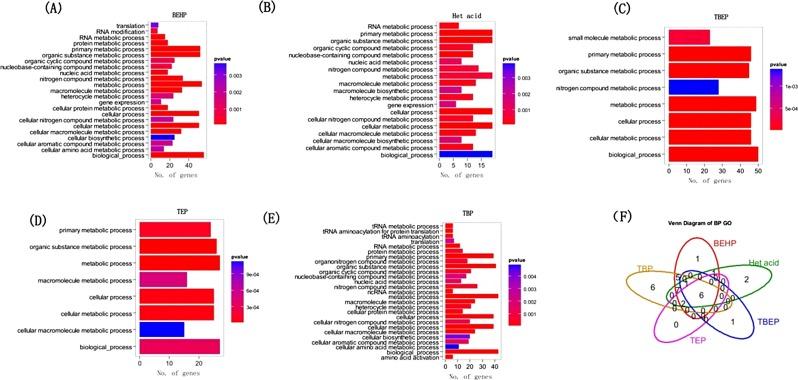
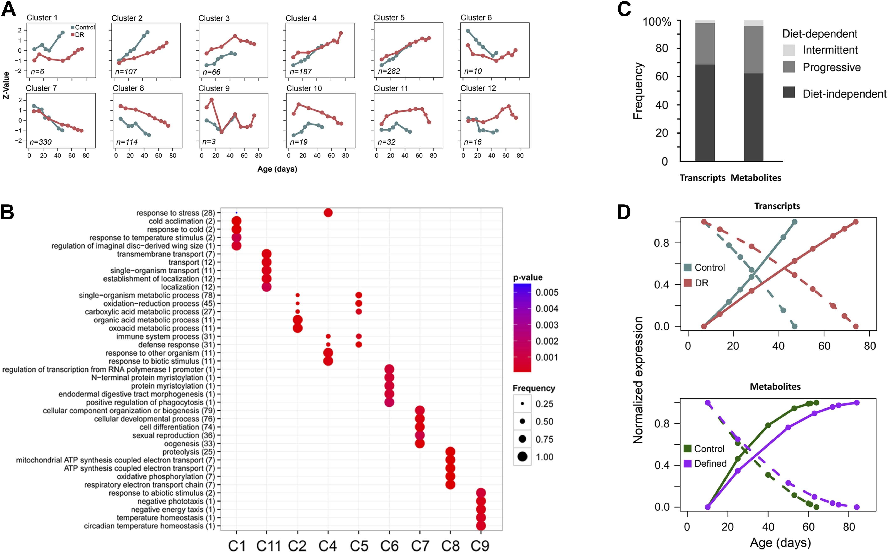
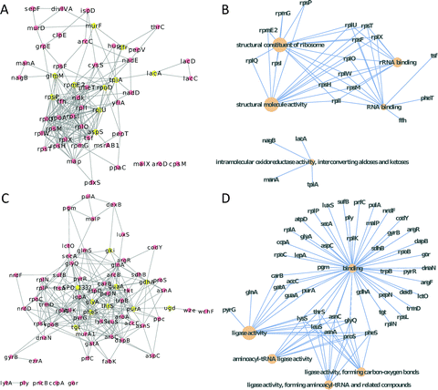

Let us know if you have published using clusterProfiler and your publication will be featured here.

Find out more on google scholar.
2016
Antibiotic-mediated gut microbiome perturbation accelerates development of type 1 diabetes in mice. Nature Microbiology. 2016.
Unbiased identification of substrates of protein tyrosine phosphatase ptp-3 in C. elegans. Molecular Oncology. 2016, 10:910-920.

Comprehensive identification of internal structure and alternative splicing events in circular RNAs. Nature Communications. 2016
Peak-valley-peak pattern of histone modifications delineates active regulatory elements and their directionality. Nucl. Acids Res.. 2016
Systems level analysis of histone H3 post-translational modifications reveals features of PTM crosstalk in chromatin regulation. Molecular & Cellular Proteomics. 2016
TP53 regulates miRNA association with AGO2 to remodel the miRNA–mRNA interaction network. Genome Res.. 2016, 26:331-341.
Integrative bioinformatic analyses of an oncogenomic profile reveal the biology of endometrial cancer and guide drug discovery. Oncotarget. 2016,7(5):5909–5923.
Critical role of lysosomes in the dysfunction of human Cardiac Stem Cells obtained from failing hearts. International Journal of Cardiology. 2016, 216:140-150.
Pyruvate Kinase Isoform Switching and Hepatic Metabolic Reprogramming by the Environmental Contaminant 2,3,7,8-Tetrachlorodibenzo-p-Dioxin. Toxicol. Sci. 2016, 149(2):358-371.
Transcriptional profiling of human smooth muscle cells infected with gingipain and fimbriae mutants of Porphyromonas gingivalis. Sci Rep.. 2016,6:21911.
ReactomePA: an R/Bioconductor package for reactome pathway analysis and visualization. Molecular BioSystems. 2016, 12(2):477-479.
2015
ChIPseeker: an R/Bioconductor package for ChIP peak annotation, comparision and visualization. Bioinformatics. 2015, 31(14):2382-2383.
DOSE: an R/Bioconductor package for Disease Ontology Semantic and Enrichment analysis. Bioinformatics. 2015, 31(4):608-609.
Aberrant DNA methylation in non-small cell lung cancer-associated fibroblasts. Carcinogenesis. 2015, 36(12):1453-1463.
A neural crest origin for cohesinopathy heart defects. Hum. Mol. Genet. 2015, 24(24): 7005-7016.
Genome-wide disruption of 5-hydroxymethylcytosine in a mouse model of autism. Hum. Mol. Genet. 2015, 24(24):7121-7131.
Correlation of clinical features and genetic profiles of stromal interaction molecule 1 (STIM1) in colorectal cancers. Oncotarget. 2015, 6(39):42169–42182.
2014
Age- and diet-associated metabolome remodeling characterizes the aging process driven by damage accumulation. eLife 2014,3:e02077

Expression Profiling of the Wheat Pathogen Zymoseptoria tritici Reveals Genomic Patterns of Transcription and Host-Specific Regulatory Programs. Genome Biol Evol 2014, 6(6): 1353-1365.
Proteomic analysis of putative heme-binding proteins in Streptococcus pyogenes. Metallomics 2014, 6:1451-1459
2013
Putative cobalt- and nickel-binding proteins and motifs in Streptococcus pneumoniae. Metallomics 2013,5:928-935.

A novel andrographolide derivative AL-1 exerts its cytotoxicity on K562 cells through a ROS-dependent mechanism. Proteomics 2013, 13(1):169–178.